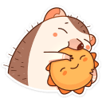

надеюсь, с твоим зубиком всё в порядке, и всё прошло быстро и безболезненно. по секрету скажу, что мои губы обладают целебными свойствами,
соприкасаясь с твоим лбом: поцелую в лобик, и дискомфорт пройдёт!
а вообще, сегодня уже пять месяцев, как мы знакомы, представляешь? это почти полгода!
сейчас многие подводят итоги года - может, и мне такое сделать?
итак, номинация "лучшее открытие года" уходит 26-му июля, когда я решилась тебе написать и обнаружила такого комфортного собеседника, которому писала сообщения, порой, на 50+ строк.
в "трогательный момент года" я бы вписала тот вечер, когда я ревела в ванной от навалившихся стресса и проблем, а ты описывал
мне забавные ситуации, которые с тобой происходили, чтобы отвлечь и развеселить. это прекрасно сработало, и я очень тебе благодарна - не только за это, но и за все случаи, когда ты спасал меня
от слёз. я бесконечно это ценю.
ну и конечно номинацию "мотивация года" заслуженно получает твоё появление в моей жизни. мне хочется больше любить себя. хочется проработать все травмы, чтобы тебе не приходилось быть моей постоянной поддержкой. хочется, чтобы рядом с тобой была лучшая версия меня.
я счастлива, что ты появился в моей жизни. спасибо <з

Назад